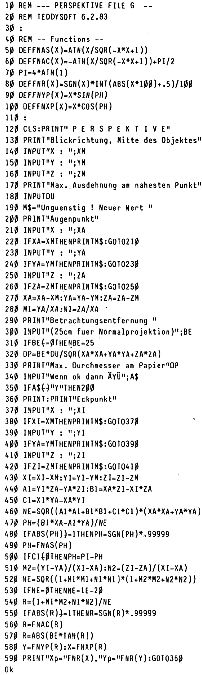

80-Bus Journal |
Mai 1983 · Ausgabe 5 |
tausend Rechnungen erstellt haben, dazu etliche Inventur- und Preislisten. Außer Zeit und Arbeit hat uns diese einfache Anlage auch ganz direkt viel Geld erspart, weil wir Fehlmengen auf die Spur kamen im Werte von ca. 7000,– DM (viel im Vergleich zum Preis eines Nascom). Unser Beispiel hat dann auch Schule gemacht: Eine andere Naturkost-Großhandelsgenossenschaft arbeitet heute ebenfalls mit einem Nascom und dem gleichen Programm.
Um keine falschen Hoffnungen zu wecken: unser Program ist sehr speziell auf unsere Bedurfnisse zugeschnitten und in dieser Form wohl kaum von anderen zu verwenden. Sollte trotzdem jemand Interesse daran haben, stelle ich gegen eine kleine Gebühr gerne das Programmlisting zur Verfügung.
Hallo liebe Leser,
in letzter Zeit hört man immer mehr von Computer-Treffen, die in den verschiedensten Orten zwischen unseren Lesern stattfinden. Eine sehr schöne, und häufig auch ertragreiche Sache. Was sollen aber solche Leser tun, die aus irgendwelchen Gründen an solchen Treffen nicht teilnehmen können oder wollen?
Für diese benachteiligten Menschen wurde von uns ’mal wieder ein Programm entwickelt. Das vollständig demolierte Assemblerlispeln können Sie gegen Einsendung einer Briefmarke von mir beziehen. Aus Platzgründen hier nur eine knappe Programmbeschreibung:
Starten Sie das Programm mit E4711. Es wartet nun auf eine Eingabe. Versuchen Sie, aus etwa 2 bis 3 Meter Entfernung, die ENTER-Taste mit einem geeigneten Gegenstand zu treffen (Kugelschreiber, Flachzange, Feuerzeug etc.). Haben Sie die Taste getroffen, erscheint auf dem Bildschirm die Nachricht „Willkommen zum Computer-Treff. Noch ein Treff?“ Wenn Sie nun die ENTER-Taste nicht mehr treffen, haben Sie bald genug von Computer-Treffen, obwohl Sie noch nie bei einem Computer-Treffen waren. Trifft sich doch gut, oder?
In diesem Sinne
Ihr Nascompl
Gerhard Klement hat uns ein „einfaches“ Perspektive-Programm geschickt. Um die Funktion zu demonstrieren, hat er das Programm WÜRFEL (Seite 27 in diesem Heft) mit vielen Kommentaren versehen. Hierzu ist ein Vergleich mit dem 3-D-Programm von Michael Bach (Seite 6) recht reizvoll.
Würfel ist eigentlich eine Modifikation von Swinghouse, das wir schon in Heft 10/82 veröffentlicht haben. Vielleicht hilft das Zusammenspiel der verschiedenen Programme, das Prinzip leichter zu durchschauen.

| Seite 4 von 28 |
|---|